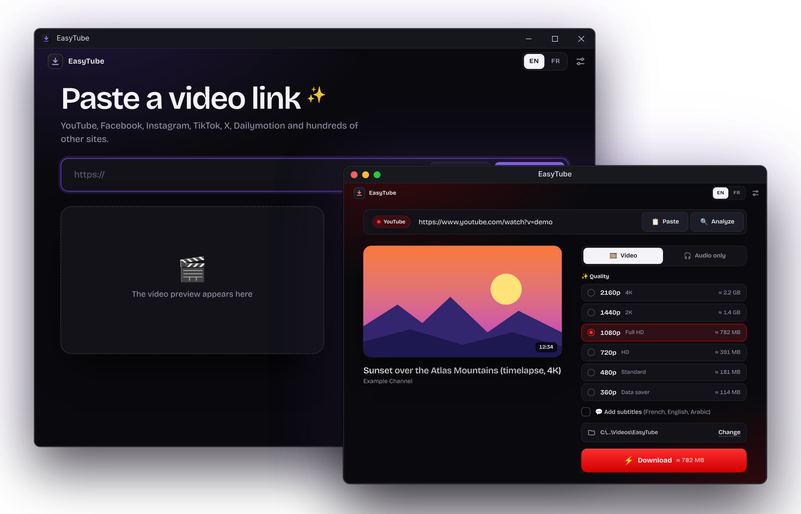
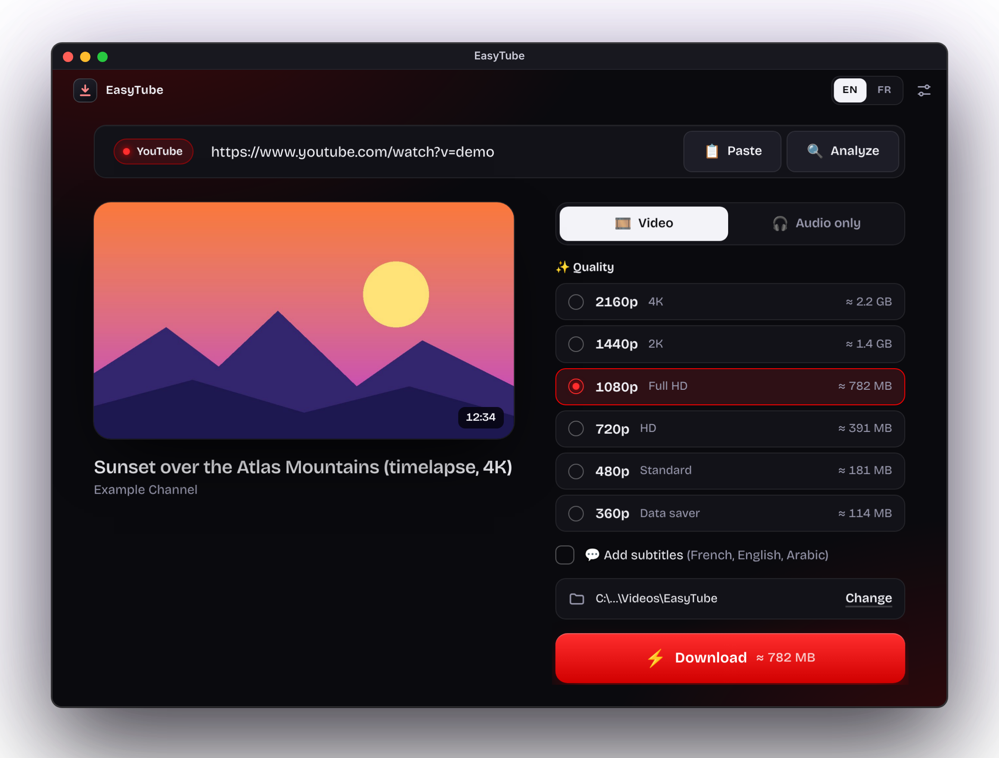
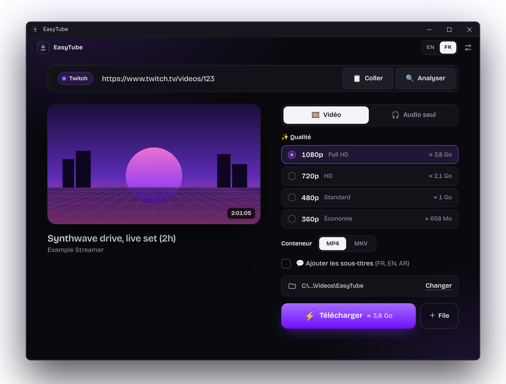
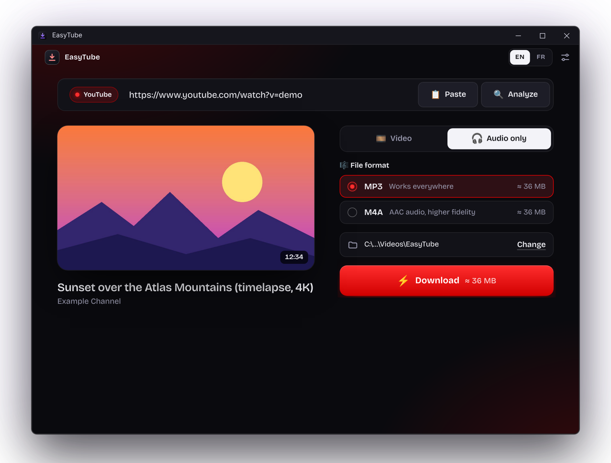

EasyTube is a free, open-source UI for yt-dlp, the most powerful video downloader. yt-dlp only works in the command line: EasyTube turns it into a simple, modern app. Nothing else to install.
EasyTube est une interface graphique (UI) gratuite et open source pour yt-dlp, le téléchargeur de vidéos le plus puissant. yt-dlp ne s'utilise qu'en ligne de commande : EasyTube en fait une appli simple et moderne. Rien d'autre à installer.

Copy a link from YouTube, Twitch, TikTok… and paste it. EasyTube shows the title, thumbnail and duration.
Copie un lien YouTube, Twitch, TikTok… et colle-le. EasyTube affiche le titre, la miniature et la durée.
Pick from the real list of available qualities, up to 4K / 8K, with the estimated size. Or audio only, in MP3 or M4A.
Choisis dans la vraie liste des qualités disponibles, jusqu'à la 4K / 8K, avec la taille estimée. Ou l'audio seul, en MP3 ou M4A.
Follow the progress, speed and time left. A notification tells you when it's ready, one click opens the file.
Suis la progression, la vitesse et le temps restant. Une notification te prévient, un clic ouvre le fichier.
Everything yt-dlp can do, without having to learn a single command.
Tout ce que sait faire yt-dlp, sans apprendre une seule commande.
The real qualities of each video, MP4 or MKV, with optional subtitles in your languages.
Les vraies qualités de chaque vidéo, en MP4 ou MKV, avec sous-titres en option dans tes langues.
Grab just the sound as MP3 (works everywhere) or M4A (higher fidelity).
Récupère juste le son en MP3 (compatible partout) ou M4A (meilleure fidélité).
Tick the videos you want, or paste several links at once. They download one after the other.
Coche les vidéos voulues, ou colle plusieurs liens d'un coup. Ils se téléchargent l'un après l'autre.
The app takes the colors of the site you paste: YouTube red, Twitch purple… or your own accent.
L'appli prend les couleurs du site collé : rouge YouTube, violet Twitch… ou ta propre couleur.
Your last 10 links: download again, copy the link or show the file in its folder.
Tes 10 derniers liens : re-télécharger, copier le lien ou afficher le fichier dans son dossier.
Update yt-dlp in one click when you decide. The official file is verified by SHA-256 before use.
Mets à jour yt-dlp en un clic, quand tu veux. Le fichier officiel est vérifié par SHA-256 avant usage.
Every failure comes with a clear explanation and what to try next. No cryptic logs.
Chaque échec vient avec une explication claire et une piste à essayer. Pas de logs incompréhensibles.
Switch language in one click. Keyboard shortcuts everywhere (Ctrl / ⌘).
Change de langue en un clic. Raccourcis clavier partout (Ctrl / ⌘).
No account, no analytics, no telemetry. Your settings and history stay on your computer.
Pas de compte, pas de statistiques, pas de télémétrie. Tes réglages et ton historique restent chez toi.
Paste a YouTube link and EasyTube turns red. Twitch? Purple. A small touch that makes it feel right at home, on more than a thousand supported sites.
Colle un lien YouTube et EasyTube passe au rouge. Twitch ? Violet. Un petit détail qui la rend familière, sur plus d'un millier de sites compatibles.



Every release lists the SHA-256 of each file so you can check your download.
Chaque version indique l'empreinte SHA-256 de chaque fichier pour vérifier ton téléchargement.
Yes. Free, open source under the MIT License, no ads, no account and no premium version.
Oui. Gratuit, open source sous licence MIT, sans pub, sans compte et sans version payante.
Signing an app costs money every year, and EasyTube is a free project. The warning only means the app is not signed. You can compare the SHA-256 listed in each release, or scan the file on VirusTotal.
Signer une app coûte de l'argent chaque année, et EasyTube est un projet gratuit. L'avertissement signifie seulement que l'app n'est pas signée. Tu peux comparer l'empreinte SHA-256 indiquée dans chaque release, ou analyser le fichier sur VirusTotal.
Websites change often. Open Settings → Check for updates: a newer yt-dlp usually fixes it. Still stuck? Open an issue on GitHub with the "Copy diagnostics" text from About.
Les sites changent souvent. Ouvre Réglages → Vérifier les mises à jour : un yt-dlp plus récent règle souvent le problème. Toujours bloqué ? Ouvre une issue sur GitHub avec le texte « Copier le diagnostic » de À propos.
The current build targets Apple Silicon (M1 and newer). Intel Macs can build it from source (see BUILDING.md).
La version actuelle vise les Mac Apple Silicon (M1 et plus récents). Sur Mac Intel, il est possible de la compiler depuis les sources (voir BUILDING.md).
EasyTube is a tool for personal use. You are responsible for respecting copyright and each website's terms of use.
EasyTube est un outil pour un usage personnel. Tu es responsable du respect du droit d'auteur et des conditions d'utilisation de chaque site.
Free, light and open source. Made with care, with the help of Claude Code.
Gratuite, légère et open source. Faite avec soin, avec l'aide de Claude Code.